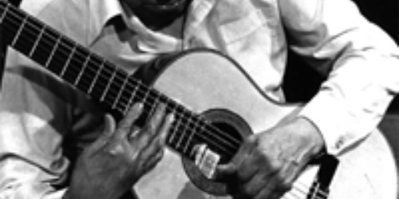

Nota de tapa
Atahualpa Yupanqui: Un grito en el silencio

De Atahualpa, el mayor trashumante que pisó estas tierras, se desconocen no sólo el misterio que encierra su obra, sino sus pesares cotidianos, la obsesión que lo arrastró incansablemente por los escenarios del mundo. Aferrado a su guitarra y sus ...